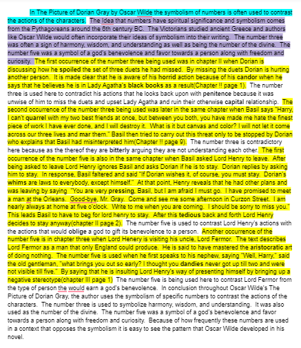
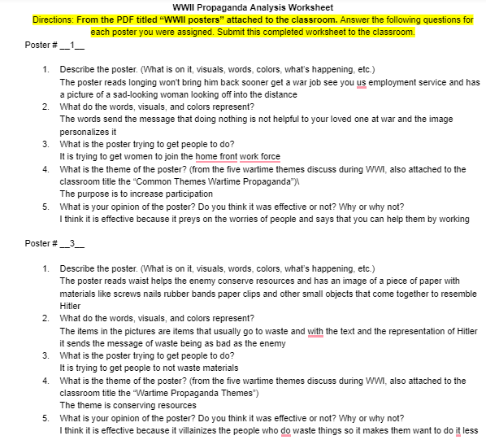

Academics Work
Essay
Worksheet
Shop Work
The purpose of the app is to quiz the user on their knowledge of music lyrics. To answer the question type into the text box next to the answer button and then hit the answer button. Once pressed the app will tell if you were correct or not. To get a new question hit the next button which will display and read the next question. One can also hit the random button to get a new question in a random order. The final way to get a new question is to type a keyword into the text box next to the search button and press the search button. The input to the app is typing in the text boxes and pressing the buttons. The output was the text displaying “correct” or “incorrect”, the display on the screen when I switched questions and the text to speech that read the question.
The list is an easy place to store data and works like a variable that can call different values at different times. Without the list you would have to hard code each question, answer, true or false statement, and pictures into the quiz. It also makes the program easier to maintain because if you wanted to add more questions all you would have to do is add the right data to the list rather that creating a new piece of code to call all of the new data and replacing code that calls other pieces of data.
Related Work
This lab was a part of a unit about creating solutions and designing IOT systems. This lab was an introduction to a software called IFTTT. IFTTT stands for If This Then That. The software’s purpose is to set up IOT systems based on decisions. Using IFTTT involves both designing an IOT system and creating a solution.
For this lab we first had to set up an IFTTT account through our google account. We then started the If this then that statement. The if this in the statement was “if tomorrow's forecast calls for rain.” The then that in the statement was “send me an email.” After filling out the information for the email you want sent the project was done. The IFTTT made it so that everytime it rains I get an email telling me that it would rain.
This lab allowed us to learn about IOT systems. One of the apps that the IFTTT used was the underground weather app. This acted like a sensor and was the input. The other app was the gmail app which acted as the output. The lab also was a foundation for further use of the IFTTT software that we used to build similar IOT systems.
DDM
My app is a clicker app that acts as a way to gather answers from different devices. It uses a cloud database so the same information can be shared by many devices. The purpose of the app is to allow a teacher to create a question and gather the answers of the students from the class. I do this by having two different types of devices, the teacher device and the student device. The student device has two buttons, one to agree and one to disagree. By pressing the agree or disagree buttons your vote is sent to the database and displayed On the teacher device there is a text box that the teacher can input a new question into that changes the question on the top of all screens. The teacher version also has a reset button that removes all of the answers to the poll.